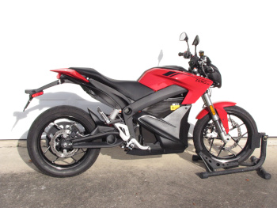
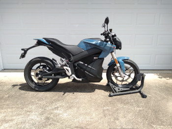

Home
My motorcycles - past and present
A little about the bikes I've owned...
Originally I drove a little Toyota Tercel econo-box. It got me places and didn't cost a lot of money, since I
knew of a decent shop in Ocala run by a Greek guy who would actually fix things for a decent price. However I'm
6'2" and I didn't fit in it very well. It also didn't have much power, but the automatic transmission was
well-matched to the engine, and managed to make it drivable.
Then I came to Orlando and discovered that the car shops don't do very good work. I didn't have the money or
ability to keep the Toyota running, as I was pretty much mechanically illiterate. When the timing chain broke and
instantly put $500 on my new credit card, I had to do something. I was a student and didn't have that kind of
money.
1982 Honda CB450SC Nighthawk
Win:
- Most comfortable stock seat ever.
- Easy to work on.
Lose:
- Rock hard tires.
- Not much power.
|

|
1984 Honda VF750S "V45 Sabre"
Win:
- POWER.
- Fairing.
- Digital LCD displays and stepper-motor instruments driven by an RCA 1802 microprocessor.
Lose:
- horribly underdesigned suspension.
- Noodle front forks.
- Hard to work on.
- Soft cams.
|
 |
1983 Yamaha XZ550 Vision
Win:
Lose:
- EVERYTHING.
- Complete piece of garbage.
|
 |
1985 Suzuki GS550EF
Win:
- Easily-replaced frozen rings.
- Nice little oil-cooled inline-4.
Lose:
- Slow.
- Strange siamesed carburetors with two bores and two linked slides per vacuum chamber.
- Eventually stolen.
|
 |
1982 Suzuki GS1100L
Win:
- Shaft drive.
- Destroyed a left-turning Subaru.
Lose:
- Lunched transmission.
- Lunched stator, rectifier, and regulator.
- Lunched starter motor.
- Clutch made of potmetal.
- Lunched carburetors.
- Complete piece of garbage.
|

 |
1989 Honda NT650 Hawk GT
Win:
- Single-sided swingarm.
- Corbin seat.
Lose:
- Slow.
- Crap stock suspension.
- Stolen.
|
 |
1985 Yamaha RZ-350
Win:
- Two-stroke.
- Corbin seat.
- Amazingly simple to work on.
- Yamaha Banshee kept parts in production.
Lose:
- Two-stroke.
- Kickstart-only.
- Bought from T&D Yamaha.
- Transmission that ate shift forks.
- Selling it.
|
 |
1993 Suzuki GSX1100G
Win:
- Shaft drive.
- Old oil-cooled GSXR motor.
Lose:
|
 |
I drove a Camaro for a while... until the defective ABS locked up the brakes and tried to kill me, and I slid
backwards into some Aramco in the rain.
2002 Suzuki SV-650
Win:
- Light.
- Powerful.
- V-twin.
- First brand new bike.
Lose:
- Suzuki.
- Carbureted.
- Uncomfortable stock seat.
|
 |
2005 Suzuki DL-650 "V-Strom"
Win:
Lose:
- Suzuki.
- Ugly.
- Suzuki.
- Nerfed engine plus more weight.
- Suzuki.
- HORRIBLY uncomfortable seat.
- Suzuki.
- No handling whatsoever.
- Suzuki.
- Crap stock windshield.
|
 |
2008 Suzuki SV-650 ABS
Win:
- Light.
- Powerful.
- V-twin.
- ABS.
Lose:
- Suzuki.
- Needs $800 computer diagnostic system to work on it.
- Suzuki.
- ABS bodged on by the college intern, causing several serious maintenance problems.
- Suzuki.
- Nightmare to work on.
|
 |
2015 Zero SR 12.5 with Power Tank
Win:
Lose:
- Ugly.
- 11 months in the shop due to bad CANBUS transceiver in Power Tank.
|
 |
2017 Honda VFR-1200X DCT
Win:
Lose:
- Dual-Clutch Transmission.
- Horrid oversensitive throttle.
- I really regret buying this POS.
|
 |
2007 Yamaha FJR-1300 (Current)
Win:
- Shaft drive.
- Fairing.
- ABS.
- Power.
- Handling.
- Second most comfortable stock seat.
Lose:
- Heavy.
- Pegs are very high.
- Fairing makes maintenance difficult.
- Clutch is pretty stiff.
- Ugly maroon color.
- Tire valves are right next to the wheel spokes, making it really difficult to check pressure or
add air.
|
 |
2021 Zero SR 14.4 with Power Tank (Current)
Win:
Lose:
- Ugly.
- No problems yet, but I was stupid enough to buy another one.
|
 |
2022 Energica Eva EsseEsse9+ (Current)
Win:
- Good range.
- Onboard J-1772 and DC fast charging.
- Speed hold.
- Parking-lot reverse.
- Looks amazingly nice.
- It looks like a motorcycle, not a spaceship.
Lose:
- Will no longer charge past 70% after only 2 years.
- 12 months in the shop because Energica stonewalled the dealer. Had to pay to ship it for repair.
- Energica went bankrupt.
- Constant flashing of error messages that the dealer can't fix.
- Regen flashes the brake light obnoxiously on the slightest deceleration, so you have to turn it off,
negating one of the advantages of an EV.
- Keyless ignition stranded me several times.
- Extremely optimistic speedometer says I'm doing 79-80 when the GPS says I'm doing 70.
- The Givi bags are a one-off design not compatible with anything else.
|


|
2024 Yamaha Tracer 9 GT+ (Current)
Win:
- Adaptive radar cruise control.
- Factory quick-shifter.
- Complex but informative dash.
- Stock mirrors work.
Lose:
- Horribly uncomfortable seat. I had to spend $500 on getting the seat done, and I had to modify the rear
attachments.
- Rock hard suspension, no matter the settings.
- Fuel gauge has ONE bar for "half to full"
- Windshield is useless garbage.
- Cornering lights are dim and useless.
- Only one headlight is on unless you're using high beams.
- If you've got cornering lights, why don't you have self-canceling turn signals?
- Engine is very gutless for 890cc.
- The MyRide-Link phone app has 167 1-star reviews and that's it. Not a single 2-star or higher.
- Navigation only available by subscription.
- Abandoned by Yamaha after only one year.
|